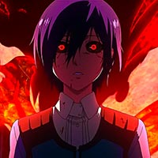

Meu nome é wojd programas e eu sei o que eu falo. Mas no momento não tenho
muito o que falar aqui então só estou fazendo espaço e gastando o tempo de algum
trouxa que ta lendo isso tmj
Não tem como!


Você pode escrever um parágrafo de qualquer jeito. Basta colocar tudo no meio do par de tags <p> e <p>
Se precisar quebrar
o texto em algum lugar
especifico
como esse,
você pode usar a tag <br>
Quero utilizar alguns símbolos diferentes tipo ⇛ ® ™ ⇚
slc fi nasci pra isso
Vamos adicionar alguns símbolos especiais € ¢ ™ ↑
Vamos adicionar alguns emotes:💪😉
Abaixo você vai ver uma imagem que está na mesma pasta


Também podemos carregar imagens que estão em alguma sub-pasta
Consigo pegar uma imagem externa também!

Nessa frase temos um termo destacado usando a tag B (não semantica)
Nessa frase temos um termo destacado usando a tag STRONG (semantica)
Nesta frase, temos um termo em itálico usando a tag I (não semantica)
Nesta frase, temos um termo em ênfase usando a tag EM (semantica)
Vamos criar um texto marcado para mostrar algo importante com a tag MARK
Estamos criando um texto grande e um texto pequeno
Podemos fazer um texto deletado e também conseguimos inserir outro texto
O texto sobrescrito é utilizado para textos assim: x20+3
Já o texto subscrito é utilizado em exemplos assim: H2O
Sem comentários '-'
Já diria ducas, um pensador obsoleto:O lobo é o homem do lobo do homem-lobo auau mim dê papai
num = int(input('Digite um número'))
if num % 2 == 0
print(f'O número {num} é PAR')
else:
print(f'O número {num} é ÍMPAR')
print('Fim do programa')
*Um
**Dois
***Três
****Quatro
****Quatro
***Três
**Dois
*Um


• 🤠 código U+1F920
• 🥸 código U+1F978
• 🤓 código U+1F913
• 🤏 código U+1F90F
• 🫴 código U+1FAF4
• ✌ código U+270C
• 🦘 código U+1F998
• 🦍 código U+1F98D
• 🐒 código U+1F412